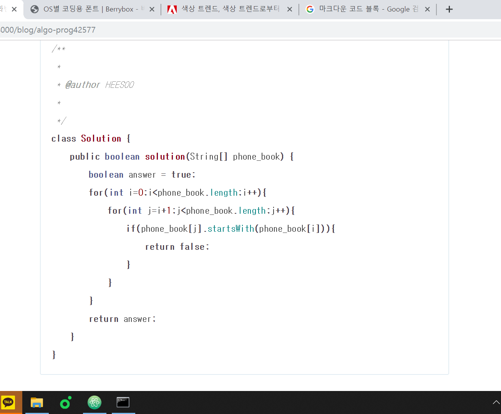
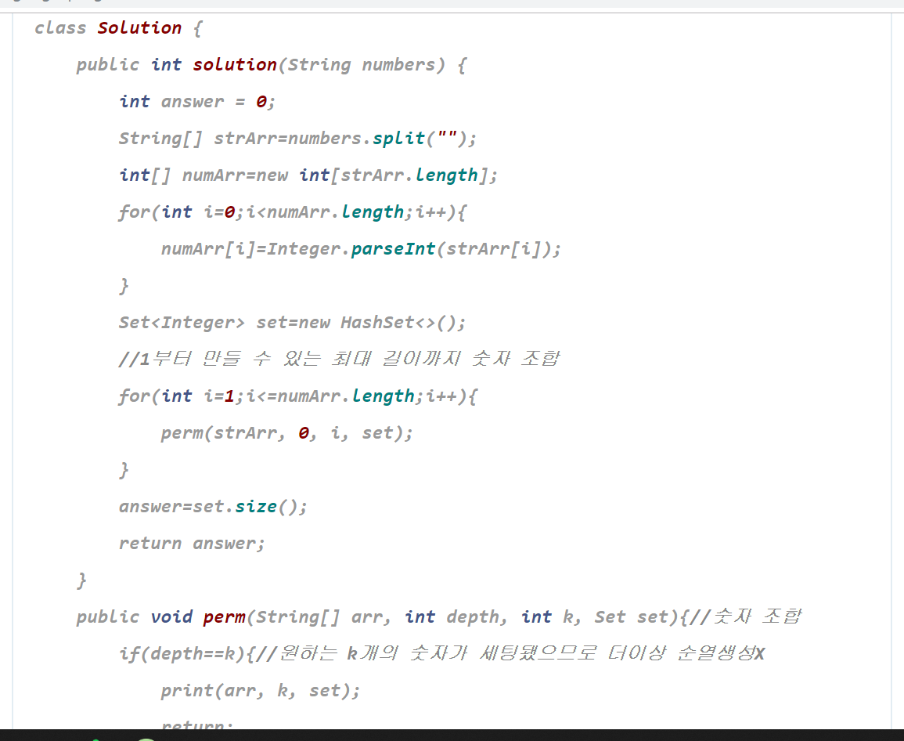

이전 코드 블록

마크다운에서 코드를 넣고 싶을 때에는 (언어)~~~ 형태를 사용한다. 하지만 가독성이 떨어지는 폰트와 배경 색상때문에 눈에 거슬린다. 구글링해도 내가 원하는 해답을 찾지 못해 프로젝트 파일을 열심히 해석한 결과,
╰( ͡° ͜ʖ ͡° )つ──☆**:・ﾟ 또 로 롱
폰트는 바뀌는데 백그라운드색깔은 안바뀌는 대참사 발생……………….
191120.

포스트마다 취하는 폰트가 다르다. 무슨 기준인지 모르겠다.
백그라운드 색깔 바꾸는 법은 알아냈다.
assets/syntax.css의 background-color를 수정하면 된다!